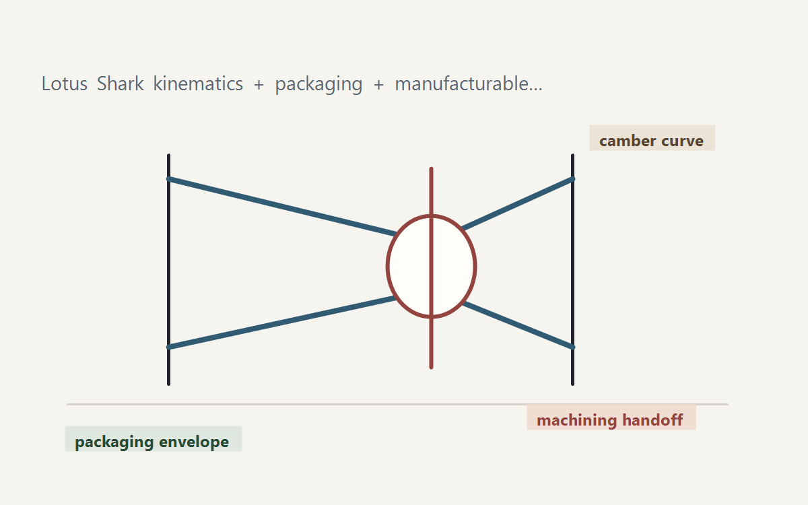

Projects
Cal Poly senior project
Bespoke Double A-Arm Suspension for Solar Car
Designed suspension geometry for a solar car application, using Lotus Shark for kinematics and coordinating with a teammate who machined the physical components.

Problem
The suspension needed to satisfy packaging constraints while controlling the geometry that matters for predictable vehicle behavior. The work required translating kinematic targets into a manufacturable physical layout.
Engineering Work
- Modeled suspension geometry in Lotus Shark to study kinematic behavior.
- Balanced packaging, wheel travel, link geometry, and manufacturability constraints.
- Coordinated part design and machining handoff with a project partner.
- Learned how early geometry decisions can make later packaging and fabrication either straightforward or painful.
Portfolio Materials to Add
- Lotus Shark screenshots with annotated geometry targets.
- CAD image showing packaging envelope and linkage layout.
- One or two kinematic plots with plain-English explanation.
- Machined component photos, if available.
- Short retrospective: what would be changed with current professional experience.
Takeaway
This project is useful context for SRAM because front drivetrain design is also mechanism work: compact packaging, motion control, interfaces, manufacturability, and the need to make geometry decisions that survive real-world use.